What is a Software Installer?
Software Installers
An installer is a piece of software used to install software programs on a system. Installers simply software installation by providing the user a step-by-step process with the ability to select the desired options.
An installation program or installer is a computer program that installs files, such as applications, drivers, or other software onto a computer. Some installers are specifically made to install the files they contain; other installers or general-purpose and work by reading the contents of the software package to be installed.
Common Windows Installer File Extension:
- 1. Executable – exe
- 2. Microsoft Windows Installation – msi
- 3. Compressed Zip File - .zip
- 4. ISO Image –
Types of Software Installation
1. Attended Installation
The most common form of installation. An installation process usually needs a user who attends it to make choices, such as accepting or declining an end user license agreement (EULA), specifying preferences such as the installation location, supplying passwords or assisting in product activation.
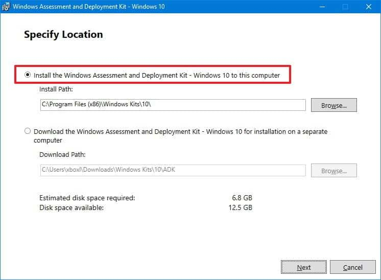 https://images.app.goo.gl/ubdSvSDcSJnuBdHW82. Silent Installation
Does not display messages or windows during its progress. All silent installations are unattended, but not all unattended installations are silent. The reason behind a silent installation may be convenience or subterfuge. Malware is almost always installed silently.
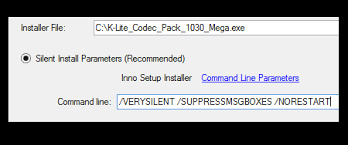 https://images.app.goo.gl/gPo8KU15AFqG8TEa93. Unattended Installation
Performed without user interaction during its progress or with no user present at all. One of the reasons to use this approach is to automate the installation of many systems. An unattended installation either does not require the user to supply anything for has received all necessary input prior to the start of installation.
https://images.app.goo.gl/ubdSvSDcSJnuBdHW84. Headless Installation
Performed without using a computer monitor connected. In attended forms of headless installation, another machine connects to the target machine (for instance via a local area network) and takes over the display output. Since a headless installation does not need a user at the location of the target computer, unattended headless installers may be used to install a program on multiple machines at the same time.
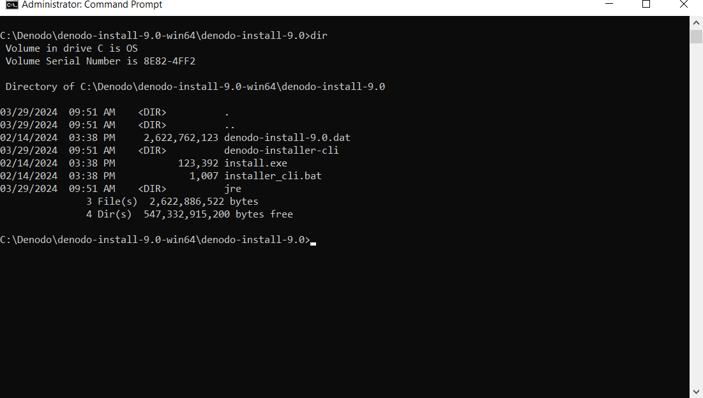 https://images.app.goo.gl/pc2dbBuQ9D8VTEjU95. Scheduled or Automated Installation
Process that runs on a preset time or when a predefined condition transpires, as opposed to an installation process that starts explicitly on a user's command. For instance, a system administrator willing to install a later version of a computer program that is being used can schedule that installation to occur when that program is not running. An operating system may automatically install a device driver for a device that the user connects.
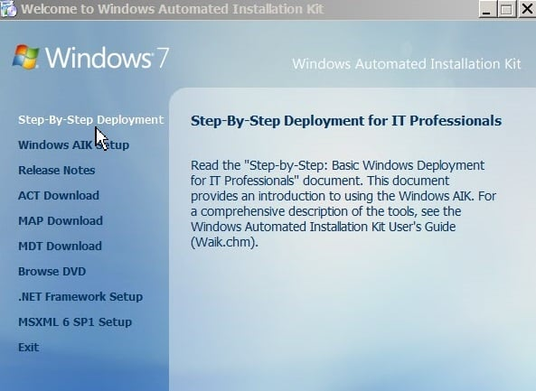 https://images.app.goo.gl/fUQMgLSXcu7ahtBN66. Clean Insatallation
Done in the absence of any interfering elements such as old versions of the computer program being installed or leftovers from a previous installation. In particular, the clean installation of an operating system is an installation in which the target disk partition is erased before installation. Since the interfering elements are absent, a clean installation may succeed where an unclean installation may fail or may take significantly longer.
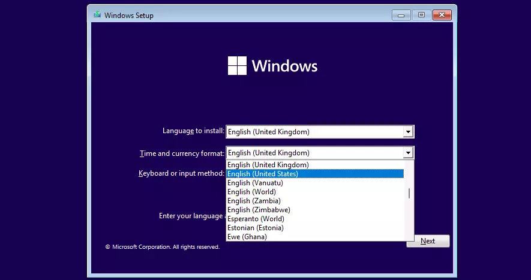 https://images.app.goo.gl/fCaDJEsSP8yusJNYA7. Network Installation
An installation of a program from a shared network resource that may be done by installing a minimal system before proceeding to download further packages over the network. This may simply be a copy of their original media but software publishers which offer site licenses for institutional customers may provide a version intended for installation over a network.
https://images.app.goo.gl/nCdicq2og6arbNth8Portable Installer Software
A program that doesn't have any configuration options is also a portable application. A portable application, sometimes also called standalone, is a program designed to read and write is configuration settings into an accessible folder in the computer, usually the folder where the portable application can be found. This makes it easier transfer to the program with the users’ preferences and data between different computers.
Like any application, portable applications must be compatible with the computer system hardware and operating system. If we are trying to install Windows Operating System on a laptop that that does not have a DVD drive, or you want a portable installation tool that we can use on a lot of computers, creating a bootable USB Windows installation drive maybe the answer we are looking for.
The Rufus Application
Rufus is a utility that helps format and create bootable USB flash drive, such as USB keys/ pen drives, memory sticks, etc. Rufus is a free utility created by Pete Batard for Microsoft Windows that creates bootable USB flash drives from ISO Image files. Rufus supports Windows version 7 and later.
 https://images.app.goo.gl/NWRwmLDKCB1McB3x7
https://images.app.goo.gl/NWRwmLDKCB1McB3x7
What is Bootable USB?
A “bootable USB” is a regular USB storage device (like a USB stick or external hard drive) that has an “ISO Image” of an operating system saved on it. An “ISO Image” is an archive file that contains all the information found on an optical disc, such as CD or DVD. This could, for example, be a Windows installation CD. Normally, whenever you start up your computer it, boots from the operating system stored on your internal hard drive. By running the bootable USB however, you can boot up your computer using the USB’s ISO image instead. This can be useful if you ever need to recover, repair or install an operating system on your computer
https://images.app.goo.gl/CuR7uMkBT68KYgm39Boot
Is to load the first piece of software that starts a computer. Because the operating system is essential for running all other programs, it is usually the first piece of software loaded during the boot process.
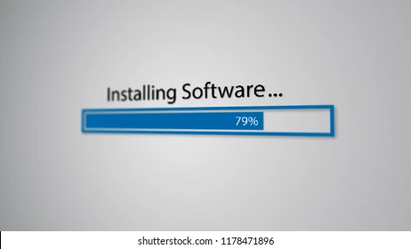 https://images.app.goo.gl/QSXXerTZeUCe2xsX8Storage Media
A device for recording (storing) information (data).
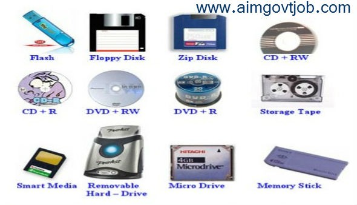 https://images.app.goo.gl/nF3SunHNQ5uKi5AG6Bootable Device/Bootable Media
Is a physical media (CD, DVD, USB Flash Drive or other removable media supported by machine BIOS as a boot device) that boots on any PC-compatible machine.
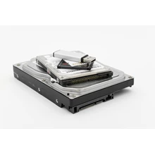 https://images.app.goo.gl/ZGK6Ag28EVvtTNRs5Bootable media is nmost often used to:
- • Recover an operating system that cannot start
- • Access nd backup the data that has survived in corruptes system
- • Backup sector-by-sector a disk with an unsupported file system
- • Hardware or Software Troubleshooting
The Process of Booting
The term boot comes from the idea of lifting oneself by one's own bootstraps: to computer contains a tiny program (bootstrap loader) which will load and run a program found on a boot device.
Cold Boot VS. Warm Boot
Cold Boot
(also called a "hard boot") means start up a computer that is turned off. It is typically performed by pressing the power button on the computer.
Warm Boot
(also called a “soft boot”) means to restart a computer. It is typically initiated from the operating system, rather than pressing a button on the computer itself.
https://images.app.goo.gl/hpJETpvs92r9nt7d8Unified Extensible Firmware Interface (UEFI)
- • A specification for a software program that connects a computer's firmware to its operating system.
- • UEFI is expected to replace BIOS eventually.
- • It is installed at the manufacturing time and is the first program that runs when a computer is turned on
- • It checks to see what hardware components the computing device has, wakes the components, and hands them over to the operating system.
 https://images.app.goo.gl/swKtXbkVzVdt8snf6
https://images.app.goo.gl/swKtXbkVzVdt8snf6
2 Types of Windows File System
1. File Allocation Table (FAT)
A table that an operating system maintains on a hard disk drive which provides a map of the clusters that a file has been stored.
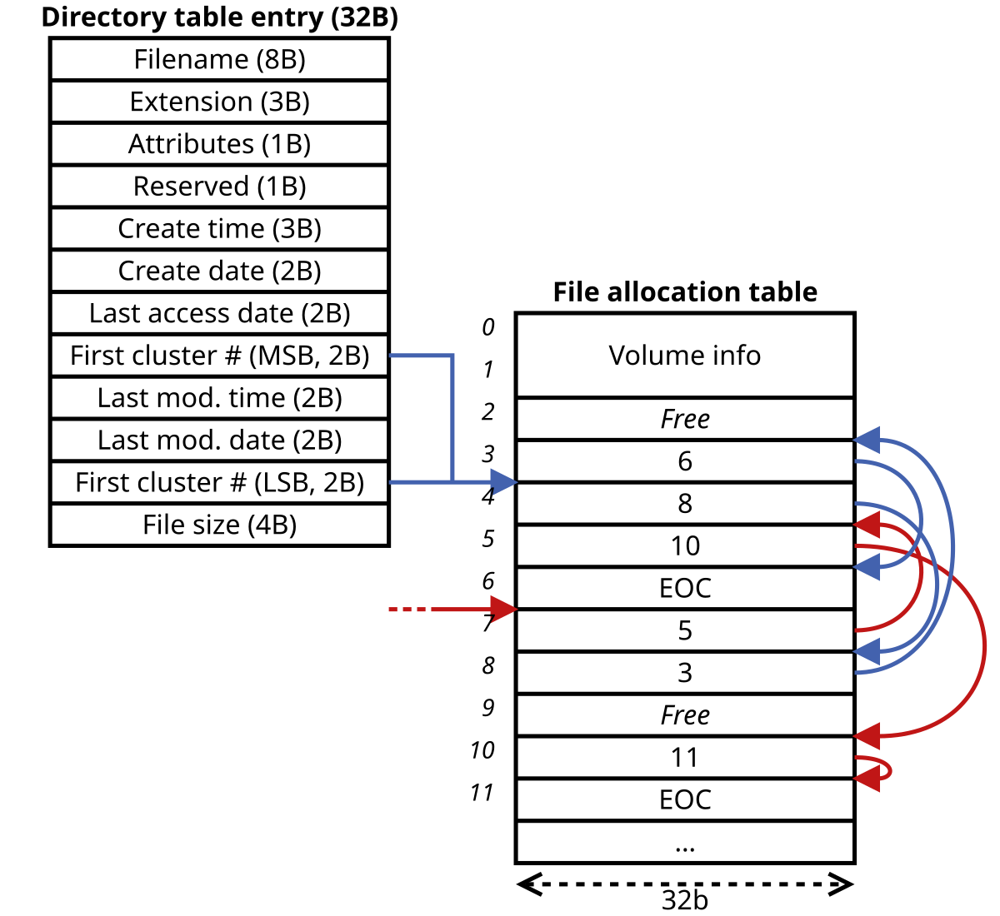 https://images.app.goo.gl/hfh1rv1hJbMhfb4g92. NTFS (NT File System sometimes New Technology File System)
A file system that the windows NT operating system uses to store and retrieve files on a hard disk.
NTFS is the windows NT equivalent of the windows 95 file allocation table (FAT) and the OS/2 High-Performance File System (HPFS).
However, NTFS offer some improvements over FAT and HPFS in terms of performance, extendibility, and security.
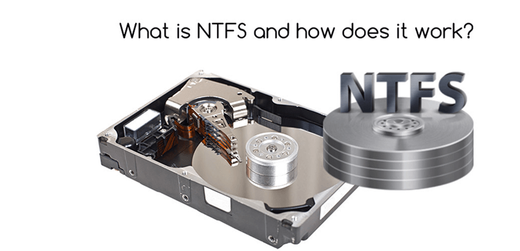 https://images.app.goo.gl/4Exggugku9s5zHik92 Types of Partition Table Formats
- • MBR (Master Boot Record)
- • GPT (GUID Partition Table)
Master Boot Record
This has been in used since the early 1980s and is widely supported. However, it is limited to a maximum of four primary partitions with up to 2TB, a size that's easily exceeded by many large hard drives available today.
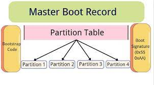 https://images.app.goo.gl/FoFpuYGZxMgTywb17GUID Partition Table
A newer technology which allows much larger disk to be used up to a theoretical limit of 9.4 zettabytes (ZB) or nearly 10 billion terabytes (TB).
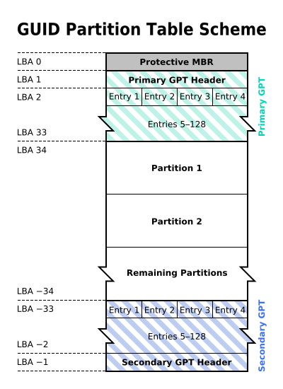 https://images.app.goo.gl/UhCpDFzQF2jv9QkR6